Networks with memory — how RNNs handle sequences one time step at a time, and how LSTM, GRU and Bi-LSTM fix their gradient problems.
Module 9 · Lecture notes by Dr. Abdulkarim Albanna
Core Concept Sequence Models ~45 minTo solve the problem of sequences it comes recurrent neural network (RNN). Recurrent means happening repeatedly for certain time. In this case each time the model receives a new word from the sentence it will translate into English, this same step will be repeated for the rest of the words consequently the translation task will be recurrent. Moreover, it will remember the previous translated word and keep it in memory so when we translate the second one, we have the context.
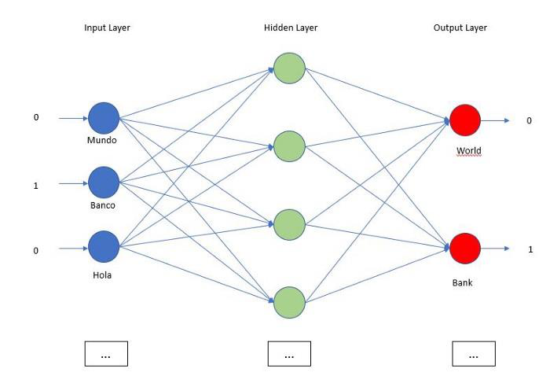
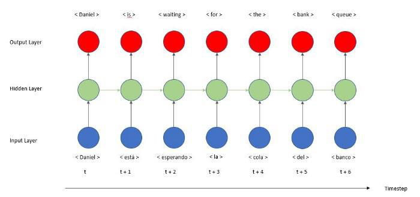
In the first image we see how a feed forward neural network will try to translate a full sentence. We create one-hot encoding for the sentence, this first layer will include all the possible Spanish words, if the word is present in the sentence like ‘banco’ we input 1 if not we input 0. The output layer is the same, a one-hot encoding for the English words. The major problem is the order is lost as we are providing a bag of words and not a sequence.
In the second image we see how a recurrent neural network will perform the same task. The first thing we notice is the model is no longer represented from left to right but instead from bottom to top. Why is that? We keep the x axes for the time step. A time step is the unit of action or time the model will do a task, in our case our time step is a word, so if we want to translate a sentence of 5 words we will have 5 time steps.
We still can see the first layer which is the input layer in blue that connects to a hidden layer in green. The second big difference we see compare to a FFNN where the cells in the hidden layer does not talk to each other, is that there is a new arrow from the cell of the previous step connecting with the next cell in the same layer. Here is the magic, in the second prediction the cell will not just receive the Spanish word but also will receive the context. The cell has created memory and now is using it to make the second prediction, instead of memory we refer to it as state. Finally, we see an output layer that will make the translation. From the prediction errors, we update the weights thanks to back propagation through time.
The beauty of recurrent neural networks lies in their diversity of application. When we are dealing with RNNs they have a great ability to deal with various input and output types.
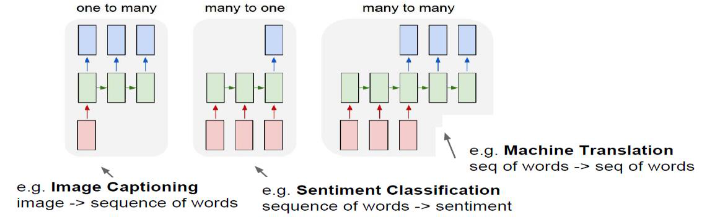
This can be a task of simply classifying tweets into positive and negative sentiment. So here the input would be a tweet of varying lengths, while output is of a fixed type and size.
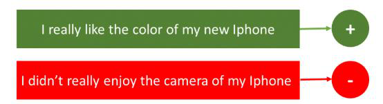
Here, let’s say we have an image for which we need a textual description. So we have a single input – the image, and a series or sequence of words as output. Here the image might be of a fixed size, but the output is a description of varying lengths
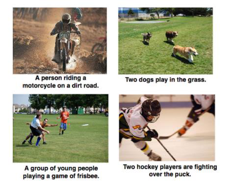
This basically means that we have some text in a particular language let’s say English, and we wish to translate it in French. Each language has it’s own semantics and would have varying lengths for the same sentence. So here the inputs as well as outputs are of varying lengths.
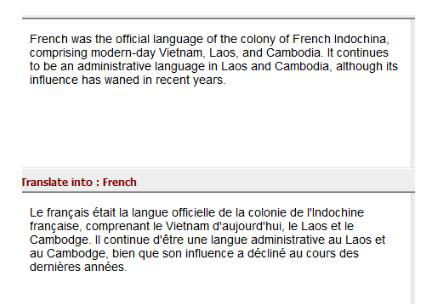
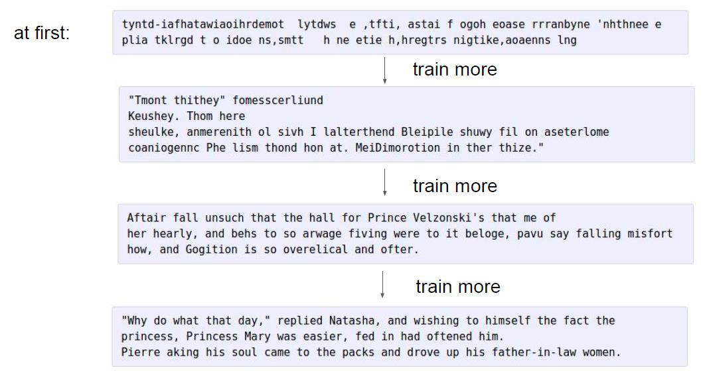
So RNNs can be used for mapping inputs to outputs of varying types, lengths and are fairly generalized in their application. Looking at their applications, let’s see how the architecture of an RNN looks like.
We can process a sequence of vectors \(\mathbf{x}\) by applying a recurrence formula at every time step:
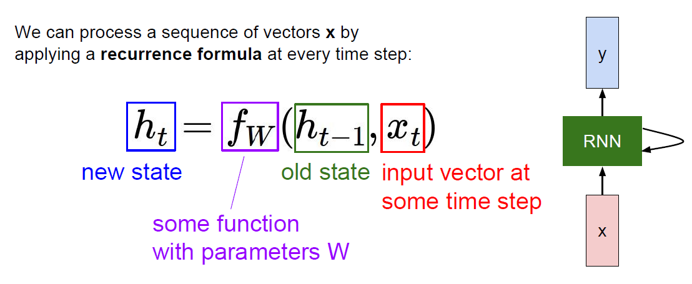
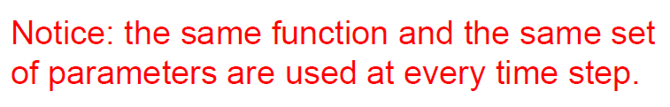
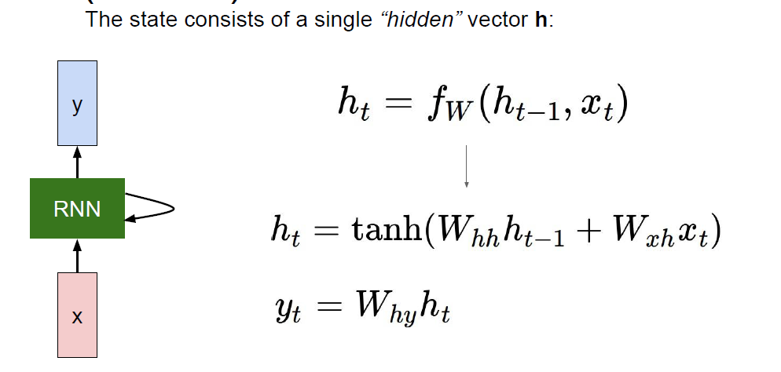
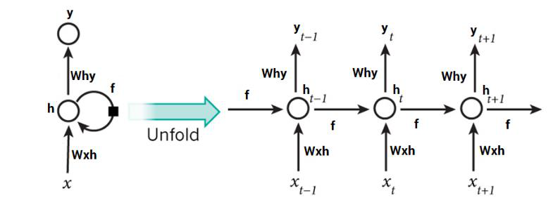
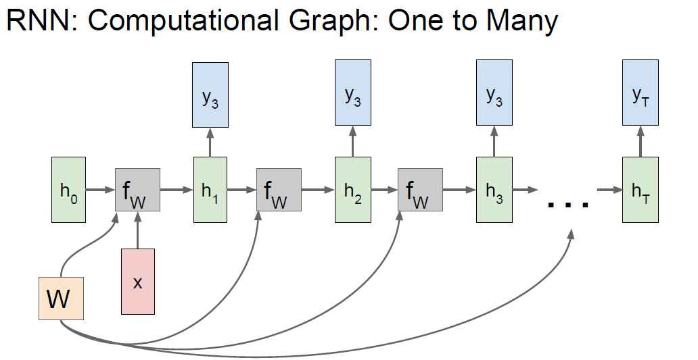
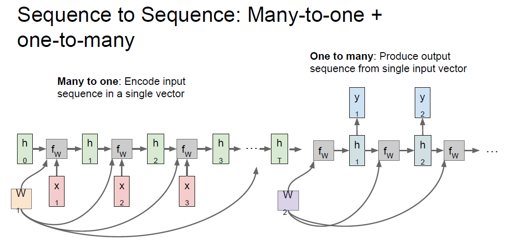
The state consists of a single “hidden” vector \(\mathbf{h}\):
\[ h_t = f_W(h_{t-1}, x_t) \]
\[ h_t = \tanh(W_{hh} h_{t-1} + W_{xh} x_t) \qquad y_t = W_{hy} h_t \]
Let’s take a look at the inputs first – the inputs are one hot encoded. Our entire vocabulary is {h,e,l,o} and hence we can easily one hot encode the inputs. Now the input neuron would transform the input to the hidden state using the weight \(w_{xh}\). We have randomly initialized the weights as a 3×4 matrix –
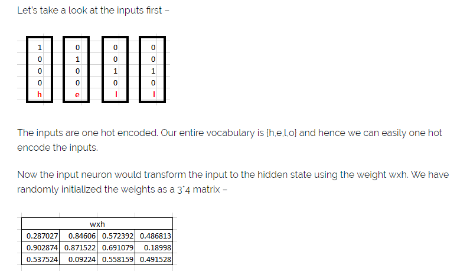
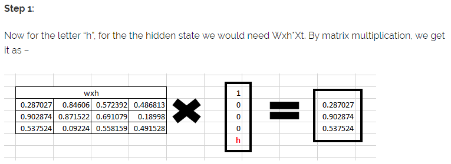
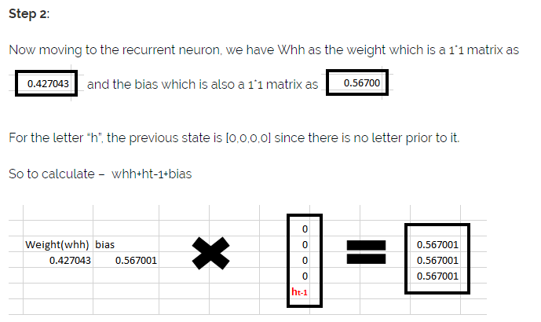
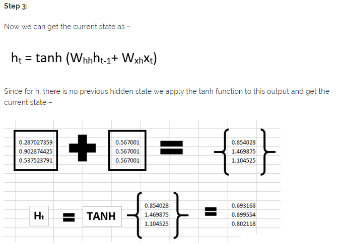
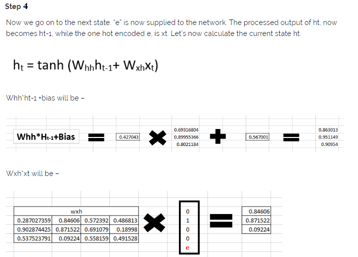
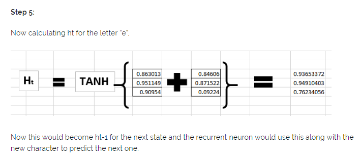
Now this would become \(h_{t-1}\) for the next state and the recurrent neuron would use this along with the new character to predict the next one.
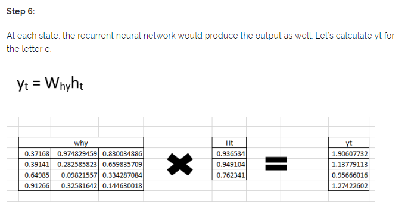
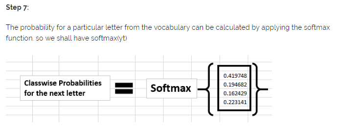
If we convert these probabilities to understand the prediction, we see that the model says that the letter after “e” should be h, since the highest probability is for the letter “h”. Does this mean we have done something wrong? No, so here we have hardly trained the network. We have just shown it two letters. So it pretty much hasn’t learnt anything yet.
Now the next BIG question that faces us is how does Back propagation work in case of a Recurrent Neural Network. How are the weights updated while there is a feedback loop?
Exploding and vanishing gradient problems during backpropagation.
Gradients are those values which to update neural networks weights. In other words, we can say that Gradient carries information.
Vanishing gradient is a big problem in deep neural networks. it vanishes or explodes quickly in earlier layers and this makes RNN unable to hold information of longer sequence. and thus RNN becomes short-term memory.
If we apply RNN for a paragraph RNN may leave out necessary information due to gradient problems and not be able to carry information from the initial time step to later time steps.
To solve this problem LSTM, GRU came into the picture.
I highly encourage you to read Colah’s blog for in-depth knowledge of LSTM.
The reason for exploding gradient was the capturing of relevant and irrelevant information. a model which can decide what information from a paragraph and relevant and remember only relevant information and throw all the irrelevant information
This is achieved by using gates. the LSTM ( Long -short-term memory ) and GRU ( Gated Recurrent Unit ) have gates as an internal mechanism, which control what information to keep and what information to throw out. By doing this LSTM, GRU networks solve the exploding and vanishing gradient problem.
Almost each and every SOTA ( state of the art) model based on RNN follows LSTM or GRU networks for prediction.
LSTMs /GRUs are implemented in speech recognition, text generation, caption generation, etc.
Every LSTM network basically contains three gates to control the flow of information and cells to hold information. The Cell States carries the information from initial to later time steps without getting vanished.
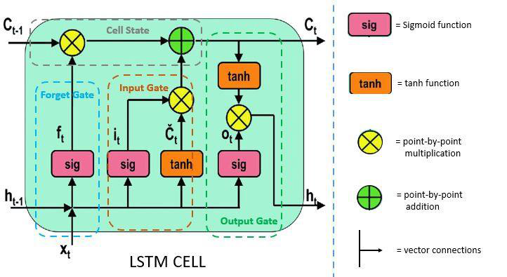
Gates make use of sigmoid activation or you can say tanh activation. values ranges in tanh activation are 0 -1.
This gate decides what information should be carried out forward or what information should be ignored.
Information from previous hidden states and the current state information passes through the sigmoid function. Values that come out from sigmoid are always between 0 and 1. if the value is closer to 1 means information should proceed forward and if value closer to 0 means information should be ignored.
After deciding the relevant information, the information goes to the input gate, Input gate passes the relevant information, and this leads to updating the cell states. simply saving updating the weight.
Input gate adds the new relevant information to the existing information by updating cell states.
After the information is passed through the input gate, now the output gate comes into play. Output gate generates the next hidden states. and cell states are carried over the next time step.
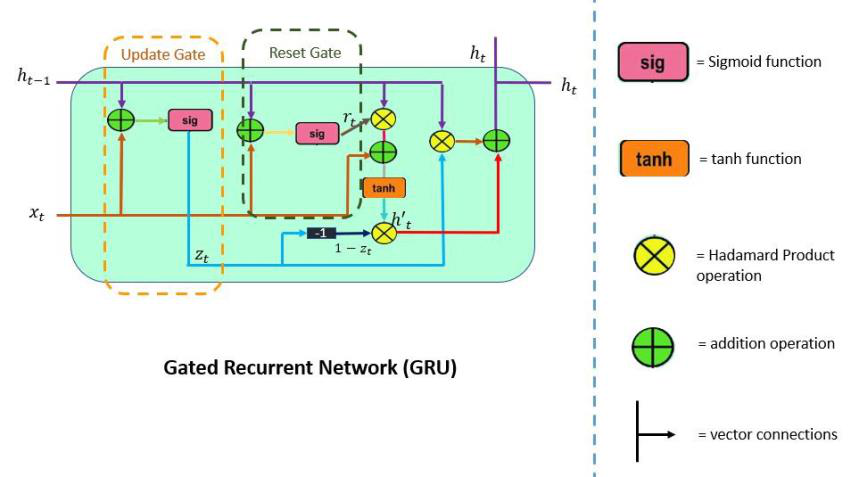
GRU ( Gated Recurrent Units ) are similar to the LSTM networks. GRU is a kind of newer version of RNN. However, there are some differences between GRU and LSTM.
Update Gate is a combination of Forget Gate and Input Gate. Forget gate decides what information to ignore and what information to add in memory.
This Gate Resets the past information in order to get rid of gradient explosion. Reset Gate determines how much past information should be forgotten.
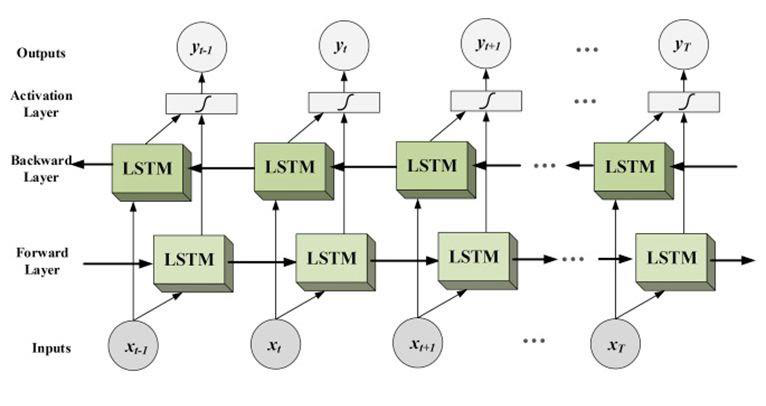
We have seen how LSTM works and we noticed that it works in uni-direction.
Bidirectional long-short term memory networks are advancements of unidirectional LSTM. Bi-LSTM tries to capture information from both sides left to right and right to left. The rest of the concept in Bi-LSTM is the same as LSTM.
This improves the accuracy of models.
See the gates compute with real numbers — step through every σ and tanh, drag the forget bias to watch long-term memory appear and vanish, and follow a Bi-LSTM's forward and backward passes cell by cell.
Open the SimulatorImplement an RNN cell's forward pass — the same \(h_t = \tanh(W_{hh}h_{t-1} + W_{xh}x_t)\) recurrence worked by hand above — and check it against PyTorch: instant feedback, reference solutions, no GPU needed.
Open TorchCode